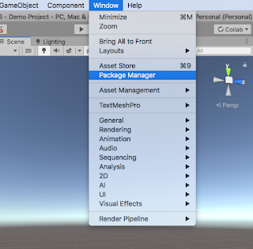
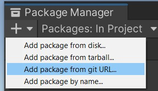
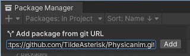
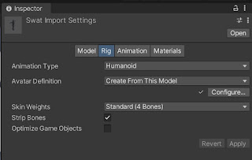
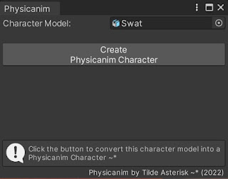
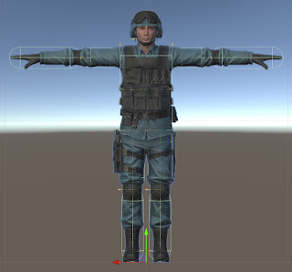
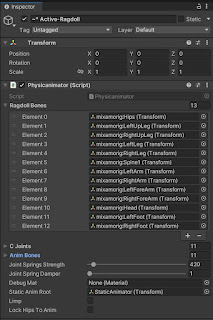
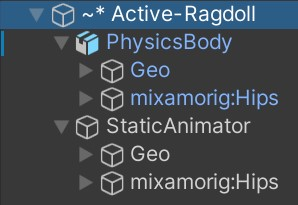

Installing the Physicanim package from git

In the Unity Editor open the package manager.
Go to Window > Package Manager

In the Unity Package Manager window, click the '+' button, then select 'Add package from git URL...'
Enter the following URL for Physicanim:
https://github.com/TildeAsterisk/Physicanim.git

Install GIT if necessary. Install Git here.
Create a Physicanim Character
In order to create your active ragdoll you will start with a normal character model playing a regular animation. Make sure your character is rigged as a humanoid.

Select your character model asset and view the inspector. In the models's the 'Rig' tab, set the Animation Type to 'Humanoid'.
Import your character into the scene.
Drag and drop your chosen animation onto your character.

With your character gameobject selected in the scene, find the 'Create Physicanim Active Ragdoll...' option and open the Physicanim Editor window.

Drag your character model into the 'Character Model' field and select 'Create Physicanim Character'.

Review the configuration of the Physicanim active ragdoll character by selecting the character gameobject in the heirarchy and reviewing the configuration in the inspector window.

This how the hierarchy looks of the Physicanim active ragdoll character.
Animate the 'StaticAnimator' character as you would normally animate a 3D character. The animations will be physics simulated.
Physicanim - The active ragdoll creator for Unity Game Engine. Procedurally generated physics animations. Animated ragdoll. Full-body collision.